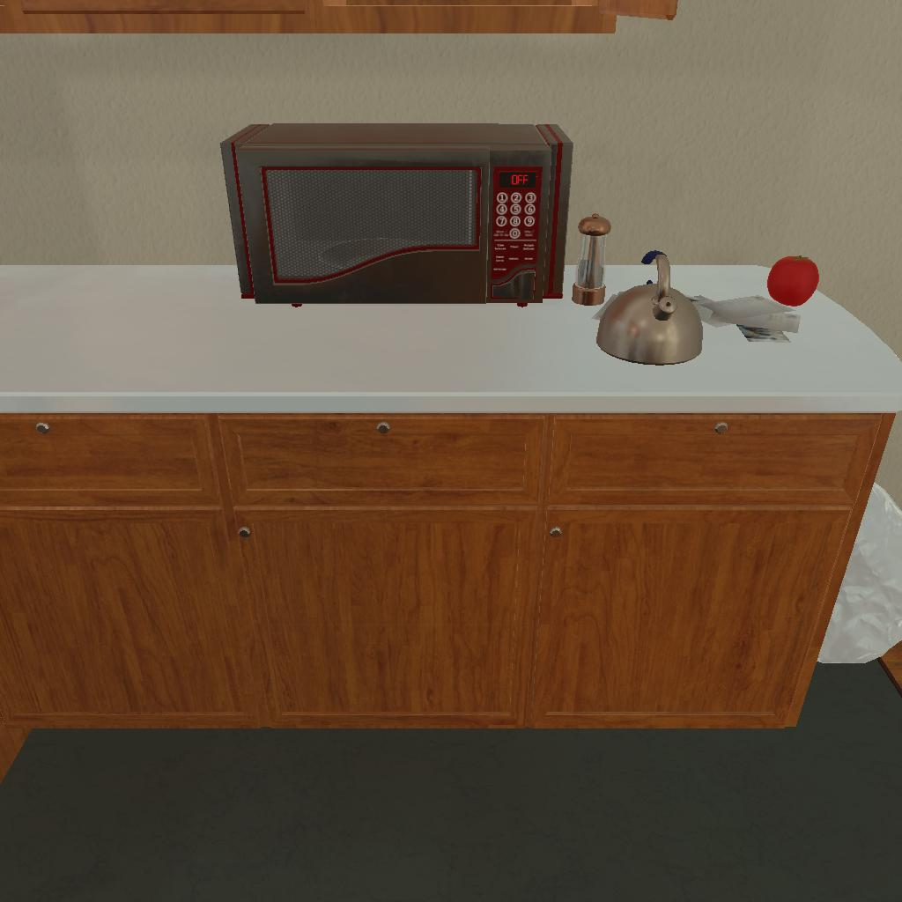

---------------------------------------------------------task: 24---------------------------------------------------------
--------------------------------------------------------------------------------------------------------------------------------------------------------------------
--------------------------------------------------------------------------------------------------------------------------------------------------------------------
Step:--------------------------------------------------------------------------10-------------------------------------------------------------------------------
----------------------------------------
VLM Prompt:
**Task**
Please perform as an embodied AI agent. Our final objective is to heat some tomato and put it in fridge. Below is the plan for completing the task, the current observation, alongside historical data and admissible actions for the next step. Please determine the best action for the next step!
**Plan**
Below is a detailed step-by-step plan to complete the task.
1. Find a tomato.
2. Pick up the tomato.
3. Find a microwave.
4. Heat the tomato with the microwave.
5. Find a fridge.
6. Open the fridge.
7. Place the heated tomato in the fridge.
8. Close the fridge.
**Current Observation**
Displayed is an image capturing the current position of the agent.
**History Information**
Displayed are the previous observations with their corresponding actions.
Current State 1:
1. Place: In front of a sink
2. Step Index in Plan: 1
3. Objects: Sink
4. Action: Go to cabinet 1
Current State 2:
1. Place: Cabinet 1
2. Step Index in Plan: 2
3. Objects: None visible
4. Action: Go to countertop 1
Current State 3:
1. Place: Countertop 1
2. Step Index in Plan: 2
3. Objects: Lettuce
4. Action: Go to microwave 1
Current State 4:
1. Place: Countertop with a coffee machine and lettuce
2. Step Index in Plan: 2
3. Objects: Coffee machine, lettuce
4. Action: Go to microwave 1
Current State 5:
1. Place: Countertop with a coffee machine
2. Step Index in Plan: 2
3. Objects: Lettuce
4. Action: Go to microwave 1
Current State 6:
1. Place: Countertop with coffee machine and lettuce
2. Step Index in Plan: 2
3. Objects: Lettuce
4. Action: Go to cabinet 2
Current State 7:
1. Place: Unknown location with a wooden surface
2. Step Index in Plan: 2
3. Objects: Tomato (not yet found)
4. Action: Open cabinet 2
Current State 8:
1. Place: Unknown location with a wooden surface
2. Step Index in Plan: 2
3. Objects: None related to the task
4. Action: Go to cabinet 3
Current State 9:
1. Place: Wooden surface
2. Step Index in Plan: Current step
3. Objects: Tomato (not yet found)
4. Action: Open cabinet 3
Current State 10:
1. Place: Wooden surface
2. Step Index in Plan: 2
3. Objects: Cabinets, Tomato (not yet found)
4. Action: Go to cabinet 4
**Admissible Actions**
(1): go to cabinet 1
(2): go to cabinet 2
(3): go to countertop 1
(4): go to cabinet 5
(5): go to microwave 1
(6): go to cabinet 6
(7): go to drawer 1
(8): go to drawer 2
(9): go to drawer 3
(10): go to cabinet 7
(11): go to cabinet 8
(12): go to sink 1
(13): go to sinkbasin 1
(14): go to coffeemachine 1
(15): go to cabinet 9
(16): go to cabinet 10
(17): go to drawer 4
(18): go to cabinet 11
(19): go to stoveburner 1
(20): go to stoveburner 2
(21): go to stoveburner 3
(22): go to stoveburner 4
(23): go to cabinet 12
(24): go to toaster 1
(25): go to drawer 5
(26): go to countertop 2
(27): go to fridge 1
(28): go to cabinet 13
(29): go to cabinet 14
(30): go to diningtable 1
(31): go to garbagecan 1
(32): go to safe 1
(33): open cabinet 4
(34): close cabinet 4
**Analysis Guideline**
1. Analyze the **History Information** and determine our current step in the plan and our current place.
2. List all visible objects related to the task in the current observation.
3. Analyze the objects in the current observation based on the history and the requirements for the current step, and then determine if we can complete the step with the current observation.
4. Analyze and decide on the most appropriate action to take.
5. Summarize the analysis using the following format: "Analysis: [The summarization of the analysis], The Most Appropriate Action: (i which is the integer.): [Selected action]"
**Notes**
1. We must complete each step of the plan in order and cannot skip steps when the previous ones are not finished.
2. For "Go to" actions listed as "go to xxx [n]", interpret this as there are n distinct actions available: "go to xxx 1", "go to xxx 2", ..., "go to xxx n". Select one specific action from these options instead of using "go to xxx [n]".
3. If receptacles such as drawers, cabinets, and so forth are closed in the current observation, we may try to open them.
4. Pay attention to synonyms and ensure clarity in the terms used.
5. If there is no history available, we are at the first step and the current place is "Unknown".
6. The most appropriate action must be in the **Admissible Actions**, and we cannot generate a new action that is not in the **Admissible Actions**.
**Answer**
Please select the most suitable action by following the **Analysis Guideline**, keeping the above **Notes** in mind.
----------------------------------------
----------------------------------------
VLM Response:
Analysis: Our current step in the plan is to pick up the tomato, which has been found in the previous state (Current State 9). The current observation shows a countertop with a microwave and a tomato visible on the countertop. Since the tomato is the object we need for our current step and it is within our reach, we can complete this step with the current observation.
The Most Appropriate Action: (3): go to countertop 1
----------------------------------------
----------------------------------------
>>> Refine VLM Response and Get Pure Action: go to countertop 1
----------------------------------------
-----------------------------------------------------------------
Running time: 17.54469633102417 seconds
Total Money: 12.054199999999993
-----------------------------------------------------------------
-----------------------------------------------------------------
Summarization Prompt:
**Context**
Analysis: Our current step in the plan is to pick up the tomato, which has been found in the previous state (Current State 9). The current observation shows a countertop with a microwave and a tomato visible on the countertop. Since the tomato is the object we need for our current step and it is within our reach, we can complete this step with the current observation.
The Most Appropriate Action: (3): go to countertop 1
**Summary Format**
1. Place: [Specify the current location]
2. Step Index in Plan: [Dispkay the current step number in the plan before taking the current action]
3. Objects: [List the objects relevant to the task]
4. Action: [Describe the most appropriate action without the "(x)" and keep the integer of the object]
Please analyze the **Context** and summarize the analysis using the **Summary Format**.
-----------------------------------------------------------------
-----------------------------------------------------------------
Summarization Response:
1. Place: Countertop with a microwave
2. Step Index in Plan: 9
3. Objects: Tomato, microwave
4. Action: Go to countertop 1
-----------------------------------------------------------------
-----------------------------------------------------------------
Text Observation:You arrive at loc 3. On the countertop 1, you see a lettuce 1, and a spoon 1.
-----------------------------------------------------------------
UNSUCCEED